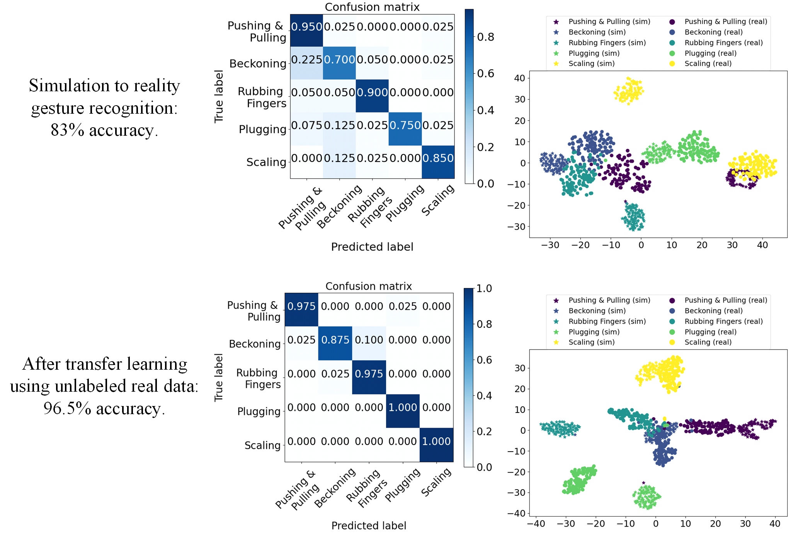

Gallery of CASTER.
Illustration of the simulation (top) and experimental (bottom) setup of CASTER.

This illustration presents both the simulated and experimental datasets derived from CASTER, with a selection of spectrograms depicted for clarity. Our experimental dataset comprises real spectrograms, calculated from received mmWave signals. On the other hand, our simulated dataset is produced by the innovative CASTER simulator. This simulator processes video clips as input, extracts the motion data of gestures, and simulates the channel impulse response for each snapshot by tracing the rays that scatter off a primitive-based hand model. The final step involves applying the Short Time Fourier Transform (STFT) to yield the simulated spectrograms.
